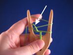
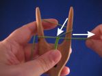
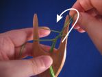

What kind of yarn can I use?
Especially in the beginning it is important that the yarn is smooth and can take a fair bit of pulling. I teach with pearl cotton, because I happen to have a big bag of it, but for example crochet cotton works well. Reenactors use silk, wool and linen, and they are all fine as long as the yarn is smooth. When your technique gets better, you can use fuzzier wool as long as it stands the pulling. Note that if your yarn is very loosely spun, it may split and cause problems. Of other materials for example viscose works well, and many acrylics are also ok. If you keep the tension of the cord loose, you can try novelty yarns like eyelash yarn. I have a few examples in my blog.
How much yarn do I need?
I always use the ratio 10:1. For example 25 meters of pearl cotton yealds 2.3-2.5 meters of cord. It is somewhat possible to switch yarn in the middle of a cord, but that spot will always be a bit thicker, so I usually check that I have enough yarn before I start.
Do I need multiple lucets?
With a bigger lucet you can use yarn of any thickness, also very thin yarns. The critical point is the space between the prongs, the finished cord has to fit there. It is also easier to lift the loops if there's space for your fingers between the cord and the prong.

What kind of lucet should I get?
Choosing a lucet is a matter of taste. I like a lucet that is about 5 cm wide and has straight prongs. Others prefer a lyre-shaped lucet with curved prongs and no handle. Some like really tiny lucets where you use a pick or a needle to lift the loop. If you want to see different types of lucets, you can take a look at my collection, I've split it into wooden lucets and lucets in other materials. If you are handy, you can make your own lucet from a piece of wood or by 3D printing.
Why is my cord too tight/loose?
It is easier to regulate the tension of the cord, if you first pull the loop away from the lucet (not upwards) until the middle loop disappears and only after that lift the loop over the prong.
When you start a new movement, you should have a small loop in the middle of the cord. Grab the loop on the right and pull it away from the lucet until the loop in the middle sits on top of the yarn. Then lift the loop over the prong. (Click the photos to see bigger pictures.)
|  |  |  |
{kind=link}
{kind=link}
{kind=link}
You can watch a little video where I do what I explain above. First away from the lucet, only after that over the prong.
Why is it so difficult to grab the loop?
When you do basic lucet, the loop is much easier to grab in front of the lucet (between the cord and the prong) than at the side. If your lucet is very small, there may not be enough space for fingers, but on most lucets you can fit your thumb and index finger between the cord and the prong. Note that if you are making flat cord, you need to grab the loop from the backside of the lucet, because the route the yarn takes around the lucet is different.
I lift the loop from the front even when I use a pick, either from below or from above.
What can I do when my wrist tires and hands cramp?
I usually lucet with the yarn in the right hand (a video of the technique). This enables me to hold the lucet in my left hand very lightly and almost horizontally, as you can see me do in this video. This way my left wrist strains less. I can use for this a lucet with or without a handle, but the lucet has to be the right width to rest comfortably in my palm. I rarely use the bone lucets in my collection as they are so small and slippery that holding them requires quite a bit of effort. My favorite lucets are about 5 cm wide and have rounded edges. If your left hand cramps when you are holding the lucet, it may be wrong size or not have enough surface or it is too slippery to stay put comfortably. You cannot really affect the shape or size by anything else than switching to a different lucet, but if your wooden lucet is very slippery, you can roughen the surface a bit with coarse sandpaper. It won't look as good, but usability gets better.
Were there lucets in the Middle Ages?
Well, that is a difficult question. From the Viking Age there are tools that could be lucets. From the 18th century there are lucets that look like a basic lucet nowadays. But in between there is practically no evidence of lucets... So I'll just refer to a few articles:
- Evidence for lucets and lucet braiding in Early Medieval Britain and Scandinavia
- The Use of the Lucet in the Fifteenth Century
A lucet is a generally accepted tool in the Society for Creative Anachronisms and even many reenactment groups accept lucets and luceted cords.
As an afterthought I'd like to mention that if you really want to, you can lucet with your fingers only. I just find it slower and harder than using a lucet.